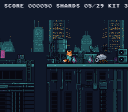

|
OpenSNES
Modern Open-Source SNES Development SDK
|
|
OpenSNES
Modern Open-Source SNES Development SDK
|
A complete side-scrolling platformer: Kit, the fox-kit courier, runs over the rooftops of the city at night to the radio beacon at the end of the level, picking up data shards and stomping the security machines on the way. Title screen, score, three lives, checkpoints, a game over and a roof cleared — with gravity, tile collision, and a camera that follows him across a world bigger than the screen.

| Button | Action |
|---|---|
| START | Start the run (title), back to the title (game over, roof cleared) |
| D-Pad Left/Right | Walk |
| A | Jump (hold Up + A for higher jump) |
Then open rooftop_run.sfc in luna (luna-gui rooftop_run.sfc) or any emulator.
The SNES screen is 256 pixels wide — 32 tiles. But the rooftop level is 2352 pixels, 294 tiles wide. The PPU's tilemap is only 32x32 entries, so you can't load the entire world at once. Instead, the game streams new tile columns into VRAM as the camera scrolls.
Think of the tilemap as a circular buffer. As the camera moves right, the leftmost column scrolls off-screen. That column's VRAM slot gets overwritten with the next column from the map. The player never sees the swap because it happens off-screen.
The level's tileset (the pixel art for every unique tile) lives at $2000, its tilemap (which tile goes where) at $6800. Kit's frames are streamed to $0000. The dynamic sprite engine keeps a second pool at $1000 for small sprites; this game draws none, so the far skyline of BG2 takes the room (155 tiles: its two halves are mirrors, and the converter's flip stores the second as flip bits).
Streaming happens in three stages, split across the frame:
During active display (CPU is free, PPU is drawing):
During VBlank (PPU is idle, VRAM is writable), vramQueueFlush() sends what was noted, one DMA per entry (the vramqueue module).
The decision logic (every frame):
Why +32, not +31? The screen shows tiles 0-31, but tile 32 is partially visible at the right edge (the camera rarely sits on an exact tile boundary). Without that extra column, you'd see a blank strip flickering at the right side during scrolling. This was a bug in the original port that took a while to track down.
The level is a row of buildings, each made of one to three roof pieces of 128x128 pixels at one height, with gaps between them. devtools/art_assets/build.py lays it out from the generated pieces in assets/neo-lumen/tiles/ and writes the four files this example reads: res/tiles.png (the 831 distinct 8x8 tiles, in the order the map numbers them), res/BG1.m16 (the map), res/map_1_1.b16 (solid or empty, per tile) and res/skyline.png. A roof's walkable surface is the top of its neon strip, so a tile is solid when it sits at the surface's row or below; the script refuses a tile that would be solid in one place and empty in another. Each step up is at most 16 pixels and each gap at most 24, so the normal jump crosses them all (testing/manifests/playthrough_rooftop_run.toml plays the level to its end). The same script stamps the radio beacon (assets/neo-lumen/props/beacon.png) on the last roof and writes res/level_objects.h: where the shards, the machines and the checkpoints are, read from the same list of buildings, so a change to the level moves them with it.
BG2 is the band of far towers, scrolled at a quarter of the camera's speed:
The 65816 has no multiply instruction and runs at 3.58 MHz. You can't afford floating-point anything. Instead, positions and velocities use 8-bit fixed-point: the high byte is the pixel position, the low byte is the fractional part (1/256th of a pixel).
At 60fps, a velocity of 0x0140 (= 1.25 pixels/frame) moves Kit at 75 pixels per second. The fractional accumulator means Kit can move at speeds finer than 1 pixel per frame — essential for smooth deceleration.
What's asr8()? Arithmetic shift right by 8 — dividing by 256 while preserving the sign, written out with an unsigned shift and two inversions so the intent is visible. cc65816's >> on a signed value IS arithmetic (the compiler checks pin it: devtools/compiler-tests/cases/test_signed_ops.c), so val >> 8 would do the same; the helper is readability, not a workaround.
GRAVITY = 48 (in 1/256 pixel/frame units). That's roughly 0.19 pixels/frame of acceleration — these constants come from the PVSnesLib example this one began as, and they feel right for a platformer.
Jumping sets a negative Y velocity:
No bounding boxes, no sprite lists. The world is made of tiles, and collision is a lookup:
map_row_ptrs[] is precomputed at load time — one pointer per row, so looking up a tile is just an array index. No multiplication, no searching. O(1).
To check if Kit is standing on ground, test two points at his feet:
Two points, not one, because the collision box is 16 pixels wide. Testing only the center would let Kit hang off ledges with half his body in mid-air. The box is smaller than his 32x32 frame: the sprite is drawn 8 pixels left and 14 up of it (KIT_DRAW_DX, KIT_DRAW_DY), so his feet, on row 30 of the frame, are the box's bottom.
Kit and the six machines are dynamic sprites: oamDynamicDraw() gives each sprite drawn a 32x32 slot of VRAM, in the order they are drawn, and uploads a frame's tiles only when it changes (oamrefresh). If a machine were skipped when off screen, every sprite drawn after it would land in another slot, over tiles that are someone else's. So all of them are drawn every frame, in the same order — a machine off screen or stomped is drawn hidden — and each one keeps its slot. A machine changes frame only while it is seen, which keeps the uploads to the ones on screen.
A hidden 32x32 sprite is drawn at y = 224, below the 224 visible lines, not at OBJ_HIDE_Y (240): sprites wrap at line 256, and a 32-px one at 240 shows its bottom 16 rows at the top of the screen. (oamHide() sets the ninth x bit as well, so it hides any size; the dynamic engine draws from oamx/oamy as given.)
The 29 shards are plain 16x16 sprites (oamSet, OAM entries 32 and up). Their eight frames are loaded once, in the tiles of the engine's slots 12-15, which it never reaches with seven sprites; the engine hides only the entries it drew the frame before, so it leaves them alone.
Kit, a shard and a machine each have a 16x16 box, and two boxes touch when their corners are less than 16 pixels apart on both axes (shrunk a little, so a brush is not a hit). Against a machine, the question is where Kit comes from:
The score, the shards and the lives are text on BG3, Mode 1's 2bpp layer, in front of the level because of two priority bits: BG3_MODE1_PRIORITY_HIGH in setMode(), and the priority bit of each text tile (text_config.priority). The text module sends its whole map (2 KB) in the VBlank after textFlush(), so the HUD is printed only when a number changes. Its palette is BG3's palette 5, CGRAM 21-23, three colours the skyline's palette leaves unused.
The game is a small state machine — GS_TITLE, GS_PLAY, GS_DOWN (a life lost: the world waits a second), GS_OVER, GS_CLEAR. When the camera jumps (back at a checkpoint, a new run), the 33 columns it now shows are written at once with the screen off, and the loop turns it back on after the next VBlank, once the NMI has sent the sprites' tiles.
One frame, one iteration. Game logic runs during active display, VRAM writes during VBlank:
The split is strict: everything above WaitForVBlank() touches only RAM. Everything below it writes to hardware. Break this rule and you get visual corruption.
The Makefile has no conversion rule: each picture carries its import settings in a file beside it, and the build runs the right tool before compiling.
The tools write the .pic / .pal (and the .map for the tileset), a res/<name>_data.as the build links, and a res/<name>.inc that declares <name>_tiles[], <name>_pal[] (each with _end) — main.c includes it.
| Module | Why it's here |
|---|---|
| console | PPU init, NMI handler, WaitForVBlank() |
| sprite | OAM buffer: Kit, the machines, the shards |
| sprite_dynamic | VRAM queue for animated sprite frames |
| sprite_lut | Tile offset calculations for the dynamic engine |
| dma | Bulk transfers: tile data, palettes, OAM buffer |
| input | padHeld(), padPressed() — NMI handler fills the buffers |
| background | bgSetScroll(), bgSetGfxPtr(), bgInitTileSet() |
| anim | Kit's idle, walk, jump and fall clips |
| vramqueue | The map column, noted during the frame and sent in VBlank |
| text | The HUD and the title, game over and cleared lines on BG3 |
Every asset sits in an ASSET_SECTION (templates/assets.inc): the linker puts it in the asset banks, never in bank $00, which is kept for code. The converted graphics get theirs from the generated res/<name>_data.as; the map and collision data, which no tool converts, keep a hand-written one in data.asm:
The map and collision data are read by C too, and that works from any bank: the C side declares them const, and every C read of const data is a far read.
console, sprite, sprite_dynamic, sprite_lut, dma, input, background, anim, vramqueue, text (LIB_MODULES in the Makefile).
| Register | Address | Role in this example |
|---|---|---|
| BGMODE | $2105 | Mode 1 (BG1 the level, BG2 the skyline, both 4bpp; BG3 the HUD, 2bpp, in front) |
| BG1SC | $2107 | BG1 tilemap at $6800 |
| BG12NBA | $210B | BG1 tiles at $2000 |
| BG1HOFS | $210D | Horizontal scroll (= camera_x) |
| VMAIN | $2115 | VRAM increment mode ($81 = vertical for column writes) |
| BG2SC | $2108 | BG2 tilemap at $7000 |
| TM | $212C | Enable OBJ + BG1 + BG2 + BG3 |
| INIDISP | $2100 | Force blank during init |
| File | What's in it |
|---|---|
| main.c | All game logic: the states, physics, collision, streaming, camera, the machines, the shards, the HUD |
| res/*.png.toml | the import settings of the tileset, the skyline and the sprite sheet; the build converts and links them |
| data.asm | ROM assets no tool converts: map data, collision table |
| res/tiles.png | the level's 831 distinct 8x8 tiles, in map order, the beacon among them (written by devtools/art_assets/build.py) |
| res/level_objects.h | the shards, the machines with their patrols, the checkpoints and the goal (written by the same script) |
| res/enemies.png | the robot insect's walk, the drone's hover, each stomped: 32x32 frames, one palette |
| res/shard.png | the data shard turning, eight 16x16 frames |
| res/skyline.png | the far towers of BG2, 512x256 (written by the same script) |
| res/kit.png | Kit seen from the side, 32x32 frames: idle, walk, run, jump |
| res/BG1.m16 | the level map: width, height, size, then one entry per 8x8 cell |
| res/map_1_1.b16 | per-tile collision properties (solid/empty) |
| res/rooftops.it | The music, "Daveo Rooftops" (Impulse Tracker), composed for OpenSNES (devtools/audio_assets, CC0) |
| res/jump_sfx.it | The five effects (jump, shard, stomp, hurt, cleared): Kenney's phaseJump1, pepSound1, zapTwoTone, error_004, powerUp1 (kenney.nl, CC0) |
| Makefile | LIB_MODULES := console sprite sprite_dynamic sprite_lut dma input background anim vramqueue text |